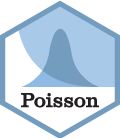

Map View Streams
fwa_mapview_streams.RdPlots stream linestrings in black together with the start of each
linestring as a red point labelled "down" and the end as a
blue point labelled "up", so that the direction of the streams can be seen.
If half_streams = TRUE the downstream half (the start) of each linestring
is instead colored red and the upstream half (the end) blue.
Streams oriented upstream (as produced by fwa_flip_streams())
have their "down" point at their mouth and "up" point at their source.
Arguments
- x
An sf data frame with a column blk and linestrings of streams (or stream segments).
- layer
A string of the column to layer the points by.
- legend
A flag specifying whether to plot a legend.
- half_streams
A flag specifying whether to split each linestring into downstream (red) and upstream (blue) halves.
- ...
Additional arguments passed to
mapview::mapview()when plotting the linestrings.
Examples
if (FALSE) { # \dontrun{
watershed <- fwa_add_watershed_to_blk(data.frame(blk = 356308001, rm = 1000))
network <- fwa_add_collection_to_polygon(watershed)
network <- select(network, blk = blue_line_key)
fwa_mapview_streams(network)
} # }